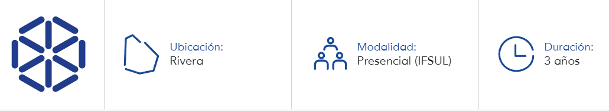
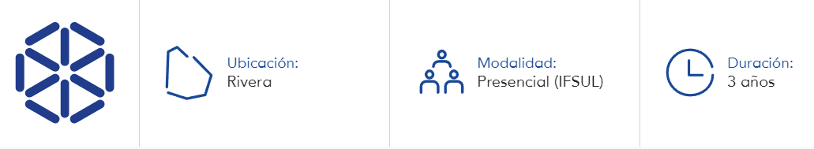

Sobre la carrera:
El Tecnólogo en Análisis y Desarrollo de Sistemas forma ciudadanos críticos y solidarios, con formación técnica y tecnológica para actuar tanto en Brasil como en Uruguay en situaciones que impliquen planificación, análisis, desarrollo, testeo, implementación, manutención, evaluación y utilización de tecnologías emergentes empleadas en el desarrollo de sistemas computacionales, observando los criterios de calidad del producto final.
Dictado de clases:
Las aulas son dictadas de forma presencial en IFSUL de lunes a viernes en horario nocturno de 19 a 23hs. Dirección del IFSUL: Av. Paul Harris, 410, Santana do Livramento.